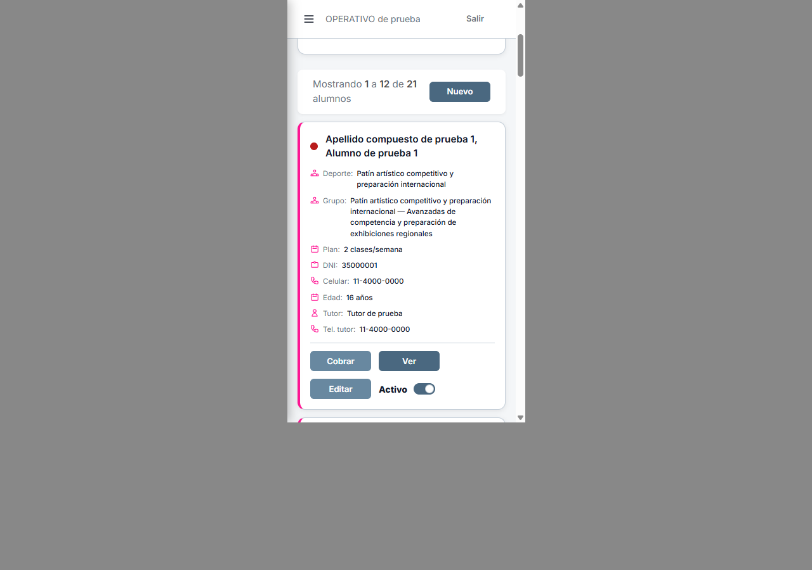
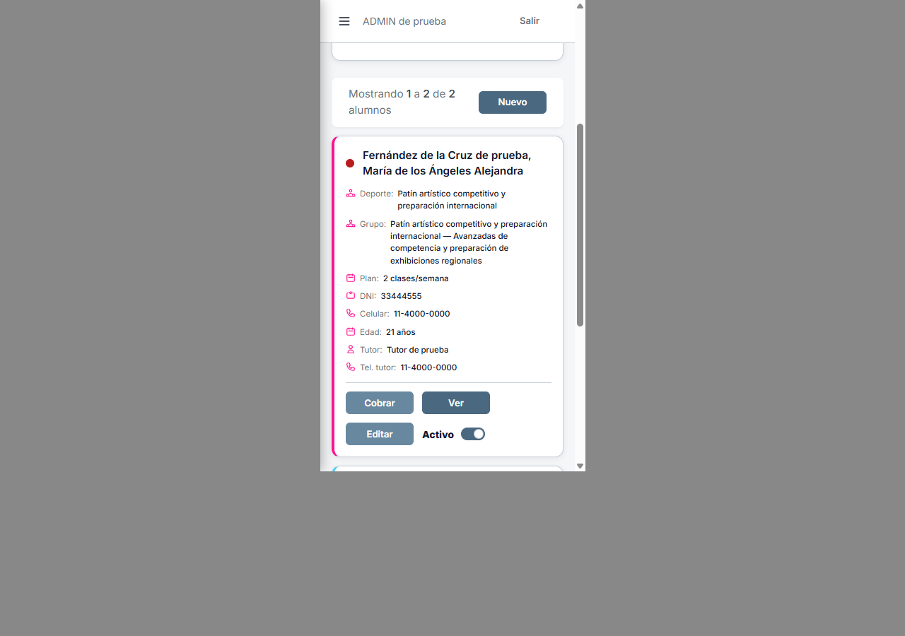
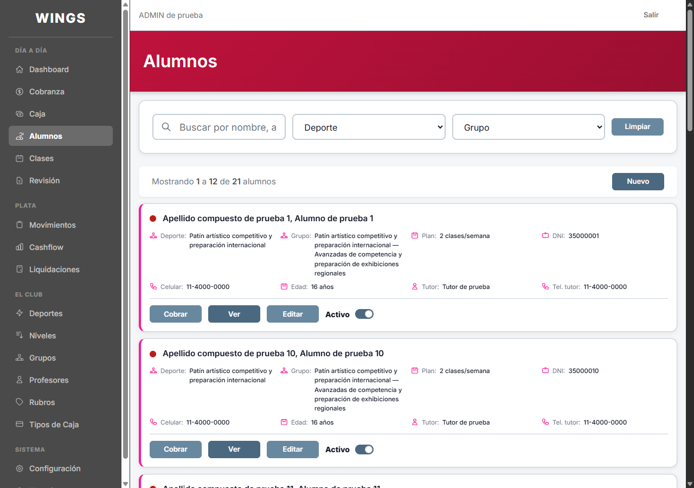
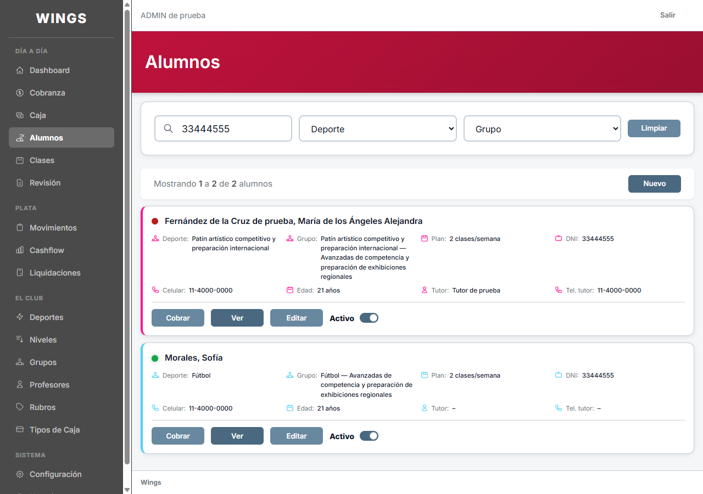

A7 · Estado real al retomar
Actualización: alineación móvil corregida por pedido de Carlos; ver imágenes nuevas. Este visor conserva el estado anterior.
08/10/2026. Una tarjeta por fila, plan y celular presentes. Capturas nuevas de Wings; alineación móvil todavía pendiente: los botones quedan a izquierda. No es una entrega aprobada.
Celular · ADMIN · Tarjeta y acciones completas

Celular · OPERATIVO

Celular · Nombre largo y acciones

Escritorio · ADMIN

Escritorio · Nombre largo

Escritorio OPERATIVO · Login de control · Mediciones · Generador.


Marco iframe real de 375 × 667 dentro de Chrome 1280 × 900. Sin reducir textos. Las imágenes conservan el marco completo; este visor muestra su zona central. Base exclusiva wings_testing_codex, datos ficticios. Botones conservan 96 × 32 px. No se probaron sus acciones en esta retoma.